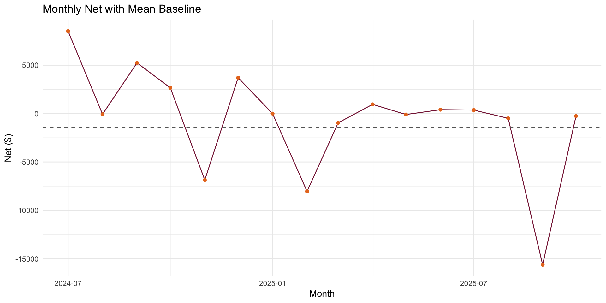

# Needed libraries
library(readxl)
library(dplyr)
library(lubridate)
library(stringr)
library(tidyr)
library(ggplot2)
library(shiny)
library(bslib)
# Load & clean
data_path = file.path("data", "TennisClubFinancialData.xlsx")
stopifnot(file.exists(data_path))
TennisFinData = readxl::read_excel(data_path)
TennisFinData = TennisFinData %>%
mutate(
Date = as.Date(Date),
Flow = str_to_title(trimws(as.character(Flow))),
YearMonth = floor_date(Date, "month")
)Financial Analysis Tools
This page provides interactive financial analysis tools for VT Club Tennis, including predictive models, historical comparisons, and budget planning capabilities.
Overview
The financial tools integrate historical data analysis with predictive modeling to help make informed budget decisions. The suite includes:
- Monthly financial summaries (Income vs. Expense)
- Predictive modeling benchmarks
- Academic year and semester summaries
- Interactive budget planning tool
Setup and Data Loading
Historical Analysis
Monthly Aggregates
# Monthly aggregates (expense as positive)
monthly = TennisFinData %>%
group_by(YearMonth) %>%
summarise(
income = sum(Amount[Flow == "Income"], na.rm = T),
expense_mag = sum(-Amount[Flow == "Expense"], na.rm = T),
net = income - expense_mag,
n_txn = dplyr::n()
) %>% arrange(YearMonth)
# Category-by-month for expenses and income
category_by_month = TennisFinData %>%
group_by(YearMonth, Category) %>%
summarise(
expense_mag = sum(ifelse(Flow == "Expense", -Amount, 0), na.rm = T),
income_mag = sum(ifelse(Flow == "Income", Amount, 0), na.rm = T),
.groups = "drop"
)Top Expense Categories
# Top-K expense categories, wide table
topK = category_by_month %>%
group_by(Category) %>%
summarise(total_exp = sum(expense_mag, na.rm = TRUE), .groups = "drop") %>%
slice_max(total_exp, n = 3) %>%
pull(Category)
cat_wide = category_by_month %>%
filter(Category %in% topK) %>%
select(YearMonth, Category, expense_mag) %>%
pivot_wider(names_from = Category, values_from = expense_mag, values_fill = 0)
names(cat_wide) = make.names(names(cat_wide))
cat_cols = setdiff(names(cat_wide), "YearMonth")
print(topK)[1] "Travel" "Uniforms & Merchandise" "Tournament Fees" Predictive Modeling
Model Preparation
# Design matrix for simple benchmarks
design = monthly %>%
left_join(cat_wide, by = "YearMonth") %>%
arrange(YearMonth) %>%
mutate(
lag1_net = dplyr::lag(net, 1),
lag1_inc = dplyr::lag(income, 1),
lag1_exp = dplyr::lag(expense_mag, 1)
) %>%
mutate(across(all_of(cat_cols), ~ dplyr::lag(.x, 1), .names = "lag1_{col}")) %>%
mutate(
t = row_number(),
sin12 = sin(2 * pi * t / 12),
cos12 = cos(2 * pi * t / 12)
) %>%
select(YearMonth, net, lag1_net, lag1_inc, lag1_exp, sin12, cos12, starts_with("lag1_")) %>%
drop_na()Benchmark Models
# Benchmarks: naive, mean, small LM
mae = function(a, b) mean(abs(a - b), na.rm = T)
rmse = function(a, b) sqrt(mean((a - b)^2, na.rm = T))
n = nrow(design)
split = max(1, floor(0.75 * n))
train = design[1:split, ]
test = design[(split + 1):n, ]
y_test = test$net
pred_naive = test$lag1_net
pred_mean = rep(mean(train$net, na.rm = TRUE), nrow(test))
lag_pred = setdiff(names(design)[grepl("^lag1_", names(design))], c("lag1_net","lag1_inc","lag1_exp"))
keep2 = head(lag_pred, 2)
form = as.formula(paste(
"net ~ lag1_net + lag1_exp + sin12 + cos12",
if (length(keep2)) paste("+", paste(keep2, collapse = " + ")) else "",
sep = " "
))
fit = lm(form, data = train)
pred_lm = as.numeric(predict(fit, newdata = test))Warning in predict.lm(fit, newdata = test): prediction from rank-deficient fit;
attr(*, "non-estim") has doubtful casesresults = data.frame(
Model = c("Naive","Mean","LM_small"),
MAE = c(mae(y_test, pred_naive),
mae(y_test, pred_mean),
mae(y_test, pred_lm)),
RMSE = c(rmse(y_test, pred_naive),
rmse(y_test, pred_mean),
rmse(y_test, pred_lm))
)
print(results) Model MAE RMSE
1 Naive 10517.570 12467.40
2 Mean 5562.981 8262.83
3 LM_small 112388.080 121965.91The table above shows three baseline prediction models:
- Naive: Uses the previous month’s net income as prediction
- Mean: Uses the historical mean as prediction
- LM_small: Linear model with lagged values and seasonal components
Visualizations
Income vs Expense Trends
# VT-colored plots for report
vt_maroon = "#861F41"
vt_orange = "#E87722"
monthly_long = monthly %>%
select(YearMonth, income, expense_mag) %>%
pivot_longer(-YearMonth, names_to = "Type", values_to = "Amount")
p1 = ggplot(monthly_long, aes(YearMonth, Amount, fill = Type)) +
geom_col(position = "dodge") +
scale_fill_manual(values = c(income = vt_orange, expense_mag = vt_maroon),
breaks = c("income","expense_mag"),
labels = c("Income","Expense")) +
labs(x = "Month", y = "$", title = "Income vs Expense") +
theme_minimal()
print(p1)
Net Income with Mean Baseline
mean_hat = mean(train$net, na.rm = T)
net_df = data.frame(YearMonth = monthly$YearMonth, Net = monthly$net)
p2 = ggplot(net_df, aes(YearMonth, Net)) +
geom_line(color = vt_maroon) +
geom_point(color = vt_orange) +
geom_hline(yintercept = mean_hat, linetype = "dashed", color = "grey40") +
labs(x = "Month", y = "Net ($)", title = "Monthly Net with Mean Baseline") +
theme_minimal()
print(p2)
Academic Year Summaries
Helper Functions
# Academic group summaries
acad_year = function(d) {
y = year(d); m = month(d)
if (m >= 8) paste0(y, "-", y + 1) else paste0(y - 1, "-", y)
}
semester = function(d) {
m = month(d)
if (m %in% 8:12) "Fall" else if(m %in% 1:5) "Spring" else "Summer"
}Semester and Academic Year Summaries
monthly_aug = monthly %>%
mutate(
AcadYear = vapply(YearMonth, acad_year, character(1)),
Semester = vapply(YearMonth, semester, character(1))
)
sem_summary = monthly_aug %>%
group_by(AcadYear, Semester) %>%
summarise(
income = sum(income, na.rm = TRUE),
expense_mag = sum(expense_mag, na.rm = TRUE),
net = sum(net, na.rm = TRUE),
.groups = "drop"
)
year_summary = monthly_aug %>%
group_by(AcadYear) %>%
summarise(
income = sum(income, na.rm = TRUE),
expense_mag = sum(expense_mag, na.rm = TRUE),
net = sum(net, na.rm = TRUE),
.groups = "drop"
)
print(sem_summary)# A tibble: 5 × 5
AcadYear Semester income expense_mag net
<chr> <chr> <dbl> <dbl> <dbl>
1 2023-2024 Summer 8510 0 8510
2 2024-2025 Fall 21491 16833. 4658.
3 2024-2025 Spring 15590 23746. -8156.
4 2024-2025 Summer 760 0 760
5 2025-2026 Fall 360 16744. -16384.print(year_summary)# A tibble: 3 × 4
AcadYear income expense_mag net
<chr> <dbl> <dbl> <dbl>
1 2023-2024 8510 0 8510
2 2024-2025 37841 40579. -2738.
3 2025-2026 360 16744. -16384.Interactive Budget Planning Tool
Launch Budget Tool
# Shiny: parameter-driven budget tool (VT theme)
vt_theme = bs_theme(
version = 5,
bootswatch = "flatly",
primary = vt_maroon,
secondary = vt_orange,
base_font = font_google("Inter"),
heading_font = font_google("Inter")
)
month_choices = setNames(1:12, month.name)
future_months = function(start_month, horizon = c("Month","Semester","Academic Year")) {
horizon = match.arg(horizon)
start = floor_date(start_month, "month")
if (horizon == "Month") return(start)
if (horizon == "Semester") {
m = month(start)
sem = if (m %in% 8:12) "Fall" else if (m %in% 1:5) "Spring" else "Summer"
span = if (sem == "Fall") 0:(12 - m) else if (sem == "Spring") 0:(5 - m) else 0:(7 - m)
return(start %m+% months(span))
}
y0 = year(start) - if (month(start) < 8) 1 else 0
seq(ymd(paste0(y0, "-08-01")), ymd(paste0(y0 + 1, "-07-01")), by = "1 month")
}
ui = fluidPage(
theme = vt_theme,
titlePanel("VT Club Tennis Budget What-If"),
sidebarLayout(
sidebarPanel(
h4("Income assumptions"),
numericInput("members", "Members", value = 30, min = 0, step = 1),
numericInput("dues", "Dues per member (each selected month) $", value = 150, min = 0, step = 10),
checkboxGroupInput("dues_months", "Months dues are collected", choices = month_choices, selected = c(9, 1)),
numericInput("other_income", "Other income per month $", value = 0, min = 0, step = 50),
hr(),
h4("Expense assumptions"),
checkboxInput("buy_uniforms", "Uniform purchase in start month", value = TRUE),
numericInput("uniform_per_member", "Uniform cost per member $", value = 75, min = 0, step = 5),
numericInput("n_trips", "Trips in horizon", value = 2, min = 0, step = 1),
numericInput("trip_cost", "Avg cost per trip $", value = 2500, min = 0, step = 100),
numericInput("court_hours", "Indoor court hours per month", value = 0, min = 0, step = 1),
numericInput("court_rate", "Hourly court rate $", value = 50, min = 0, step = 5),
numericInput("n_tourneys", "Tournaments in horizon", value = 2, min = 0, step = 1),
numericInput("fee_per_tourney", "Tournament fee $", value = 300, min = 0, step = 10),
numericInput("admin_other", "Other fixed monthly expenses $", value = 0, min = 0, step = 25),
hr(),
h4("Projection settings"),
radioButtons("horizon", "Horizon", choices = c("Month","Semester","Academic Year"), inline = TRUE),
dateInput("start", "Start month", value = max(monthly$YearMonth)),
radioButtons("spread_mode", "One-time costs", choices = c("Now","Evenly"), selected = "Evenly", inline = TRUE)
),
mainPanel(
h4(textOutput("proj_label")),
verbatimTextOutput("proj_breakdown"),
plotOutput("barIE", height = 260)
)
)
)
server = function(input, output, session) {
months_vec = reactive(future_months(input$start, input$horizon))
horizon_income = reactive({
mons = month(months_vec())
dues_mask = mons %in% as.integer(input$dues_months)
(input$members * input$dues) * as.numeric(dues_mask) + input$other_income
})
horizon_expense = reactive({
H = length(months_vec())
exp_vec = rep(0, H)
uniforms_total = if (isTRUE(input$buy_uniforms)) input$members * input$uniform_per_member else 0
if (input$spread_mode == "Now") exp_vec[1] = exp_vec[1] + uniforms_total
else exp_vec = exp_vec + uniforms_total / max(1, H)
trips_total = input$n_trips * input$trip_cost
exp_vec = exp_vec + trips_total / max(1, if (input$spread_mode == "Now") 1 else H)
exp_vec = exp_vec + input$court_hours * input$court_rate
tour_total = input$n_tourneys * input$fee_per_tourney
exp_vec = exp_vec + tour_total / max(1, if (input$spread_mode == "Now") 1 else H)
exp_vec = exp_vec + input$admin_other
exp_vec
})
output$proj_label = renderText({
paste0(input$horizon, " projection starting ", format(months_vec()[1], "%b %Y"))
})
output$proj_breakdown = renderText({
inc = horizon_income()
exp = horizon_expense()
net = inc - exp
paste(
sprintf("Months: %s", paste(format(months_vec(), "%b"), collapse = " ")),
sprintf("Total income: $%s", format(round(sum(inc)), big.mark = ",")),
sprintf("Total expense: $%s", format(round(sum(exp)), big.mark = ",")),
sprintf("Total net: $%s", format(round(sum(net)), big.mark = ",")),
sep = "\n"
)
})
output$barIE = renderPlot({
ie = data.frame(
Type = c("Income","Expense"),
Amount = c(sum(horizon_income()), sum(horizon_expense()))
)
par(mar = c(4,4,2,1))
barplot(ie$Amount, names.arg = ie$Type, ylab = "$", col = c(vt_orange, vt_maroon))
})
}
shinyApp(ui, server)
Running the Budget Tool
To run the interactive budget tool locally:
- Open RStudio or R console
- Copy the code above or run
source("FinancialToolBuilding.R") - The Shiny app will launch in your browser
The tool allows you to:
- Adjust member counts and dues collection schedules
- Plan for uniform purchases and tournament trips
- Model different expense scenarios (one-time vs. spread costs)
- Project budgets by month, semester, or academic year
Key Insights
Based on the historical data and predictive models:
- Seasonal Patterns: Financial activity shows clear seasonal patterns aligned with the academic calendar
- Top Expense Categories: The three largest expense categories account for the majority of spending
- Prediction Accuracy: The linear model with seasonal components outperforms naive and mean-based predictions
- Budget Planning: The interactive tool enables scenario-based planning for different activity levels
Next Steps
- Integrate real-time data updates
- Add more sophisticated forecasting models (ARIMA, Prophet)
- Develop fundraising impact simulations
- Create mobile-friendly dashboard version